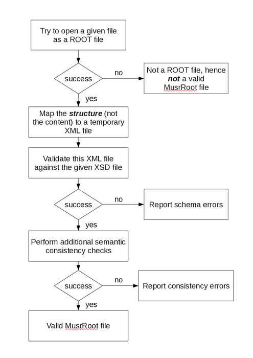

MusrRoot
1 Introduction
Until 2011 different μSR file formats were used within PSI. The bulk-μSR instruments were writing their data in the
PSI-BIN file format, which is a fixed binary format with rather stringent limitations. The LE-μSR (LEM) instrument was using a
ROOT (CERN) based file format which was tightly tailored to the special needs of the LEM instrument. This situation was unsatisfactorily and hence it was decided to move forward to a open file format called
MusrRoot to be described in the following.
2 Some Basics Concerning ROOT Files
The μSR data acquisition systems at PSI are utilizing
MIDAS (see
Midas Home Page ). The
MIDAS analyzer, which is responsible to build histograms, especially the μSR decay histograms, makes it very easy to build
ROOT (see
ROOT/CERN home page ) histogram objects (these are
TH1F objects for μSR decay histograms).
ROOT is a C++ object-oriented data mining frame work. These histograms can be collected and saved in
ROOT files (
TFile). In order to ease the understanding of the upcoming definitions, a few
ROOT related things shall be summaries here. For details concerning the
ROOT frame work documentation please check
ROOT/CERN Users Guide and
ROOT/CERN Reference Guide .
ROOT files (
TFile) are binary files which can hold any kind of objects. A
TFile is organized similarly to a directory structure of an operating system. Within the
ROOT framework, there is a
TFile browser available which allows to inspect these files. This browser (
TBrowser) will show all object saved in the
TFile directly, if they derive from
TObject.
The
MusrRoot file format to be described below is only using a small subset of possible
ROOT objects, namely:
-
TFolder: this are the top level objects in the MusrRoot file.
-
TH1F: Hold the μ-decay-histograms.
-
TObjArray: Holding collection of header information.
-
TObjString: Holding the content of any header information.
Since all these objects are deriving form
TObject, they will be directly accessible via the
TBrowser -object. For instance, the μ-decay-histograms can be directly plotted, are even fitted, out of the box.
As mentioned before,
ROOT files are open-file-format files meaning that they can contain more entries (and most probably will) than the ones specified in the following. The specified ones will be the mandatory ones for
all instruments. Before defining all mandatory entries, the
MusrRoot file structure shall be sketched.
The
MusrRoot file structure looks like:
histos ---|
|- DecayAnaModule ---|
| |- hDecay001
| |- hDecay002
| ...
|
|- SCAnaModule ---|
... |- hSampleTemperature
|- hSampleMagneticField
...
RunHeader ---|
|- RunInfo
|- DetectorInfo ---|
| |- Detector001
| |- Detector002
| ...
|
|- SampleEnvironmentInfo
|- MagneticFieldEnvironmentInfo
|- BeamlineInfo
...
where
hDecay001, etc. are
ROOT histograms (to be more specific:
TH1F), containing the μSR decay histograms. There can be as many as needed, especially there is no limitation about their length. The histogram object names will be
hDecayXXX, where
XXX (leading zero
int,
i.e. %03d in C/C++ notation, starting with `1') is the histogram number. The title and name of the histogram (see description of the
TH1F ROOT class) contains the label of the histogram, like `top', `forward', etc. How many of these histograms are present is accessible through the
RunInfo folder in which the necessary header information are found (details see next sections). The folder
SCAnaModule contains histograms of some of the slow-control parameters, as for instance the sample temperature versus time, the applied field versus time, etc. Again the label of the histogram will give more specific information about its content.
The
RunHeader contains all needed meta-information to describe a μSR-run. The list of the
minimal number of required "folders" of the
RunHeader is given in the following structure:
RunHeader (TFolder) ---|
|- RunInfo (TObjArray)
|- DetectorInfo (TObjArray)
|- SampleEnvironmentInfo (TObjArray)
|- MagneticFieldEnvironmentInfo (TObjArray)
|- BeamlineInfo (TObjArray)
In brackets the object type is given.
RunInfo contains most information relevant for the user and will be itemized Sec.
RunInfo Overview and
RunInfo Required.
DetectorInfo contains detector specific information, like detector name, time zero bin, etc. (details in Sec.
DetectorInfo Required).
SampleEnvironmentInfo (details in Sec.
SampleEnvironmentInfo Required), and
MagneticFieldEnvironmentInfo (details in Sec.
MagneticFieldEnvironmentInfo Required) store additional, more detailed information concerning the sample environment.
BeamlineInfo stores beamline relevant information (details in Sec.
BeamlineInfo Required).
Before elaborating more on the required items within this structure, a few words on the
ROOT types used here:
RunHeader is a
TFolder object. All the "sub-directory" entries are of type
TObjArray and collect items of type
TObjString or other
TObjArray (
i.e. sub-directories and sub-sub-directories, etc.).
3.1.1 RunInfo Overview
| Name |
Internal Type |
Comment |
| Version |
TString |
SVN version of TMusrRunHeader |
| Generic Validator URL |
TString |
URL of the generic MusrRoot validation xsd-file. |
| Specific Validator URL |
TString |
URL of the instrument specific validation xsd-file. |
| Generator |
TString |
Program which wrote the MusrRoot file, |
| |
|
e.g. nemu_analyzer |
| File Name |
TString |
File name of the MusrRoot file, |
| |
|
e.g. deltat_tdc_gps_4295.root |
| Run Title |
TString |
|
| Run Number |
Int_t |
|
| Run Start Time |
TString |
ISO 8601 date time |
| Run Stop Time |
TString |
ISO 8601 date time |
| Run Duration |
TMusrRunPhysicalQuantity |
run duration in sec |
| Laboratory |
TString |
e.g. PSI |
| Instrument |
TString |
e.g. GPS |
| Muon Beam Momentum |
TMusrRunPhysicalQuantity |
e.g. 28.1 MeV/c |
| Muon Species |
TString |
positive, or negative muon |
| Muon Source |
TString |
e.g. Target E - Low Energy Muons or |
| |
|
"Target M" ... |
| Setup |
TString |
|
| Comment |
TString |
|
| Sample Name |
TString |
|
| Sample Temperature |
TMusrRunPhysicalQuantity |
e.g. 3.21 +- 0.05 K; SP: 3.2; CF1 |
| Sample Magnetic Field |
TMusrRunPhysicalQuantity |
e.g. 350.002 +- 0.005 G; SP: 350; WXY |
| No of Histos |
Int_t |
|
| Time Resolution |
TMusrRunPhysicalQuantity |
e.g. 0.1953125 ns |
| RedGreen Offsets |
TIntVector |
e.g. 0; 20 |
These entries should be clear except for the
RedGreen Offsets and the column "Internal Type" which shortly will be discussed before specifying the content of the other required folders.
-
RedGreen Offsets: in case experiments are performed with external stimuli, there will be a collection of related histograms. For instance for electrical field experiments, there will be histograms for field on/off, doubling the number of needed histograms. In order to distinguish them easier in the data file, the RedGreen Offsets were introduced. One selection of histograms (assuming for the moment 8 detectors) will be numbered from 1 to 8 (lets say the field off ones). The other set of histograms (field on in this example) will then start with 21 through 28 (see table above). The same will be true for the detector information (see Sec. DetectorInfo Required). The entry No of Histos will only give 8 for the given example, meaning that red/green multiplication is defined rather via RedGreen Offsets than the number of histograms.
- Internal Types: in order to ease the handling of the
MusrRoot run header, a class TMusrRunHeader is available which deals with it. The "Internal Type" specified, corresponds to the internal representation in within this class. In the MusrRoot file these entries are all saved as browsable ROOT strings (TObjString). The only special type is TMusrRunPhysicalQuantity which is introduced to deal with physical quantities. They always can be represented in the following way:
<property name> <value> +- <estimated error> <unit>; SP: <demand>; <description>
Not all of these values are needed to be given and depending on which are given, the representation in the
MusrRoot file will be different (handled by
TMusrRunHeader). Examples are given in the comment column of the table above. For details see
TMusrRunPhysicalQuantity - Possible Representations.
A mock-up
TBrowser print-out would look like the one shown in the following figure. You might notice, that at the end of each entry you find a "
-@X ", where
X is a number. This is an encoding of the internal type of the entry and is the price to be payed not using derived types. The next section will explain this in much more detail.

TMusrRunHeader mock up. The red shaded entries are of type
TMusrRunPhysicalQuantity
The different μSR instruments need different information to be written into the data file (next to the most important ones: the histograms). The above defined properties are the
minimal number of required ones. There are different possible approaches to deal with it on the implementation level.
- A base class dealing with minimal required standard is defined. Afterwards for each instrument a class is derived which is extending the base class to the needs of the instrument.
- The base class is defined in a more abstract way, and some external, text-based description is given which defines the details of the instrument.
Even though the first approach is very clean, it would mean a lot of maintenance work. The 2nd approach is slightly more demanding for the handling class (
TMusrRunHeader and helper classes), but having the advantage of easy maintainability and expandability. The idea is that all header information can be classified into 7 groups (see previous and following section(s)):
- Strings, represented by
TString
- Integers, represented by
Int_t
- Floating point numbers, represented by
Double_t
- Physical quantities, represented by
TMusrRunPhysicalQuantity - Possible Representations
- Collection of strings, represented by
TStringVector
- Collection of integers, represented by
TIntVector
- Collection of floating point numbers, represented by
TDoubleVector
These properties can be collected by themselves in form of vectors. This way any needed information can be written into the
ROOT file. The class
TMusrRunHeader is implementing this run header concept. In following section code snippets will be discussed, showing how this is used on level of the
MIDAS analyzer,
musrfit reader routine, and
any2many conversion routines. The section
Validation will discuss how to validate
MusrRoot files.
There are two things needed to deal with the
MusrRoot run header, namely writing it and reading it. I will start with the writing as will be done in the
MIDAS analyzer.
An example program
write_musrRoot_runHeader which is writing a full run header is part of the
musrfit package. Here I will concentrate just on the most essential parts. First one needs an instance of
TMusrRunHeader
TMusrRunHeader *header = new TMusrRunHeader();
TMusrRunPhysicalQuantity prop;
header is the instance of
TMusrRunHeader.
prop is an instance of
TMusrRunPhysicalQuantity which will be needed further down in the description. In the next step some run header entries will be added
header->Set("RunInfo/File Name", "deltat_tdc_gps_2871.root");
header->Set("RunInfo/Run Title", "here comes the run title");
header->Set("RunInfo/Run Number", 2871);
Adding information is done via the multiple overloaded
Set(<pathName>,<value>) method. Here
<pathName> is a string representing the "path" like representation in the
MusrRoot file structure, followed by the "value" to be set,
e.g. "=File Name=".
<value> can be any of the types listed at the beginning of Sec.
TMusrRunHeader Concept. Here a few examples how to set
TMusrRunPhysicalQuantity.
prop.Set("Sample Temperature", 3.2, 3.21, 0.05, "K", "CF1");
header->Set("RunInfo/Sample Temperature", prop);
prop.Set("Time Resolution", 0.1953125, "ns", "TDC 9999");
header->Set("RunInfo/Time Resolution", prop);
prop.Set("CF3", MRH_UNDEFINED, 3.27, 0.09, "K", "strange temperature");
header->Set("SampleEnvironmentInfo/CF3", prop);
Here
TMusrRunPhysicalQuantity objects are fed via the use of the overloaded set-method. For details see
TMusrRunPhysicalQuantity - Possible Representations.
To set some property within "sub-sub-directories" it would like this:
header->Set("DetectorInfo/Detector001/Time Zero Bin", 3419.0);
To write the whole run header into a file would look something like this:
TFile *f = new TFile(fileName, "RECREATE", "write_musrRoot_runHeader");
if (f->IsZombie()) {
delete f;
return -1;
}
// create the needed TFolder object
TFolder *runHeader = new TFolder("RunHeader", "MusrRoot Run Header Info");
// create the "directory" structure
if (header->FillFolder(runHeader)) {
runHeader->Write(); // write run header to file
}
f->Close();
The following code snippet shows how the extract the full run header from the
MusrRoot file.
TFile *f = new TFile(fileName, "READ", "read_musrRoot_runHeader");
if (f->IsZombie()) {
delete f;
return -1;
}
TFolder *runHeader = 0;
f->GetObject("RunHeader", runHeader);
if (runHeader == 0) {
cerr << endl << ">> **ERROR** Couldn't get top folder RunHeader";
closeFile(f);
return -1;
}
TMusrRunHeader *header = new TMusrRunHeader(fileName);
if (!header->ExtractAll(runHeader)) {
cerr << endl << ">> **ERROR** couldn't extract all RunHeader information";
closeFile(f);
return -1;
}
f->Close();
delete f;
The routine
ExtractAll(TFolder *runHeader) decodes all the
TObjString objects and fills internal data structures. This means when reading a
MusrRoot -file the above handling is always needed. After the
ExtractAll call, parameters can be extracted via the getter routines available. For instance to read the
Run Number, the code would look like
Bool_t ok;
Int_t ival;
header->Get("RunInfo/Run Number", ival, ok);
if (ok)
cout << endl << "Run Number: " << ival;
else
cout << endl << "**ERROR** Couldn't obtain the 'Run Number'.";
Reading a
TMusrRunPhysicalQuantity object,
e.g. the
Sample Temperature looks like this
TMusrRunPhysicalQuantity prop;
header->Get("RunInfo/Sample Temperature", prop, ok);
if (ok) {
cout << endl << "Sample Temperature: " << prop.GetValue() << " +- ";
cout << prop.GetError() << " " << prop.GetUnit().Data();
cout << "; SP: " << prop.GetDemand() << "; " << prop.GetDescription().Data();
} else {
cout << endl << "**ERROR** Couldn't obtain the 'Sample Temperature'.";
}
4.2 Validation of a MusrRoot File
Since
MusrRoot is an open and extensible file format a mechanism is needed to validate that a given file is indeed holding the
minimum of required entries. To check this the following scheme is implemented in the program
musrRootValidation:

MusrRoot validation scheme
In the following this validation scheme will be discussed as it is implemented in
musrRootValidation:
- It is checked if the given file name is a
TFile
- The file structure is recursively parsed and mapped into an temporary XML file. XML is used since there are ample of parser and validation frameworks at hand. For details check any decent book about XML. Here the
libxml2 is used, because also ROOT is requiring it.
- In a next step the XML file (holding the structure of the supposed
MusrRoot file is validated against a XML schema. The minimum of required entries is described by MusrRoot.xsd which is part of musrfit but also available from the PSI/LMU web-page.
- If the schema validation is successful additional semantic checks (like is the number of decay histograms the same as the number of detector entries, etc.) will be preformed.
This validation scheme is useful for people which define instrument specific extensions of the base
MusrRoot, as for instance the LEM instrument at PSI. It is also useful for people writing file converters in order to cross check if the generated file is valid.
5 RunInfo Required
| Name |
Internal Type |
Comment |
| Version |
TString |
SVN version of TMusrRunHeader |
| Generic Validator URL |
TString |
URL of the generic MusrRoot validation xsd-file. |
| |
|
e.g. http://lmu.web.psi.ch/facilities/software/MusrRoot/Validation/MusrRoot.xsd |
| Specific Validator URL |
TString |
URL of the instrument specific validation xsd-file. |
| |
|
e.g. for LEM: http://lmu.web.psi.ch/facilities/software/MusrRoot/Validation/MusrRootLEM.xsd |
| Generator |
TString |
Program which wrote the MusrRoot file, |
| |
|
e.g. nemu_analyzer |
| File Name |
TString |
File name of the MusrRoot file, |
| |
|
e.g. deltat_tdc_gps_4295.root |
| Run Title |
TString |
|
| Run Number |
Int_t |
|
| Run Start Time |
TString |
ISO 8601 date time |
| Run Stop Time |
TString |
ISO 8601 date time |
| Run Duration |
TMusrRunPhysicalQuantity |
run duration in sec |
| Laboratory |
TString |
e.g. PSI |
| Instrument |
TString |
e.g. GPS |
| Muon Beam Momentum |
TMusrRunPhysicalQuantity |
e.g. 28.1 MeV/c |
| Muon Species |
TString |
positive, or negative muon |
| Muon Source |
TString |
e.g. Target E - Low Energy Muons or |
| |
|
"Target M" ... |
| Setup |
TString |
|
| Comment |
TString |
|
| Sample Name |
TString |
|
| Sample Temperature |
TMusrRunPhysicalQuantity |
e.g. 3.21 +- 0.05 K; SP: 3.2; CF1 |
| Sample Magnetic Field |
TMusrRunPhysicalQuantity |
e.g. 350.002 +- 0.005 G; SP: 350; WXY |
| No of Histos |
Int_t |
|
| Time Resolution |
TMusrRunPhysicalQuantity |
e.g. 0.1953125 ns |
| RedGreen Offsets |
TIntVector |
e.g. 0; 20 |
6 DetectorInfo Required
The
DetectorInfo is organized in a sub-tree like
DetectorInfo ---|
|- Detector001
|- Detector002
...
For each histogram in the
histos/DecayAnaModule corresponds detector entry here.
The numbering of the detectors has to correspond the its histogram,
e.g. hDecay023 ⇔
Detector023,
i.e. potentially discontinuous to show
red /
green breaks.
Detector<XXX> has the elements
| Name |
Internal Type |
Comment |
| Name |
TString |
detector name, e.g. Left-NPP |
| Histo Number |
Int_t |
histogram number. This number corresponds to the histogram number in the histos/DecayAnaModule sub-tree. |
| Histo Length |
Int_t |
length of the histogram |
| Time Zero Bin |
Double_t |
The type is Double_t since for the high-field spectrometer at PSI an Int_t representation would be not good enough. |
| First Good Bin |
Int_t |
|
| Last Good Bin |
Int_t |
|
7 SampleEnvironmentInfo Required
Here only a single entry is required, namely
8 MagneticFieldEnvironmentInfo Required
Here only a single entry is required, namely
| Name |
Internal Type |
Comment |
| Magnet Name |
TString |
name of the used magnet, e.g. WEW. |
| |
|
In case of ZF measurements, there might be an entry like ZF. |
9 BeamlineInfo Required
Here only a single entry is required, namely
10 Exhaustive MusrRoot Tree Including Everything Required
Here it is assumed that there are
hypothetical red /
green data with electric field on/off and light on/off, and hence 4 data sets per detector, and 8 detectors of the instrument:
left/forward, top/forward, right/forward, bottom/forward, left/backward, top/backward, right/backward, bottom/backward. To show the whole tree structure, it will be splitted in the representation afterwards, but keep in mind: this will be all part of a single
MusrRoot file. I will add comments in the tree structure by the symbol
#. Lets start with the μSR data histograms:
histos -|
|- DecayAnaModule -|
|- hDecay001 # left/forward, electric field off, light off
|- hDecay002 # top/forward, electric field off, light off
|- hDecay003 # right/forward, electric field off, light off
|- hDecay004 # bottom/forward, electric field off, light off
...
|- hDecay007 # right/backward, electric field off, light off
|- hDecay008 # bottom/backward, electric field off, light off
|- hDecay011 # left/forward, electric field on, light off
|- hDecay012 # top/forward, electric field on, light off
|- hDecay013 # right/forward, electric field on, light off
|- hDecay014 # bottom/forward, electric field on, light off
...
|- hDecay017 # right/backward, electric field on, light off
|- hDecay018 # bottom/backward, electric field on, light off
|- hDecay021 # left/forward, electric field off, light on
|- hDecay022 # top/forward, electric field off, light on
|- hDecay023 # right/forward, electric field off, light on
|- hDecay024 # bottom/forward, electric field off, light on
...
|- hDecay027 # right/backward, electric field off, light on
|- hDecay028 # bottom/backward, electric field off, light on
|- hDecay031 # left/forward, electric field on, light on
|- hDecay032 # top/forward, electric field on, light on
|- hDecay033 # right/forward, electric field on, light on
|- hDecay034 # bottom/forward, electric field on, light on
...
|- hDecay037 # right/backward, electric field on, light on
|- hDecay038 # bottom/backward, electric field on, light on
...
Comments: as can be seen the histograms are continuous numbered until there is a
red /
green mode switch where the histogram number "jumps" (
e.g. from
008 to
011). In order to fill in the different
red /
green histograms an offset is added (here 10, 20, and 30).
Next there will be the slowcontrol histograms:
histos -|
|- SCAnaModule -|
|- hSampleTemperature
|- hMagneticField
|- hModeratorTemperature
...
Comments: Theses histograms show typical time histograms of temperature, magnetic field, etc.
during the run. The number of the histograms and their content will be quite different for each instrument.
Next the whole
RunHeader. Here the information will be grouped in different folders collecting related information, like general run info, detector info, sample and magnetic field environment info, beamline info, etc.
RunInfo:
000 - Version: $Id: TMusrRunHeader.cpp 5092 2012-03-13 07:47:00Z nemu $ -@0
001 - Generic Validator URL: http://lmu.web.psi.ch/facilities/software/MusrRoot/Validation/MusrRoot.xsd -@0
002 - Specific Validator URL: http://lmu.web.psi.ch/facilities/software/MusrRoot/Validation/MusrRootLEM.xsd -@0
003 - Generator: nemu_analyzer -@0
004 - File Name: lem12_his_0234.root -@0
005 - Run Title: here comes the run title -@0
006 - Run Number: 234 -@1
007 - Run Start Time: 2012-04-19 14:25:22 -@0
008 - Run Stop Time: 2012-04-19 19:13:47 -@0
009 - Run Duration: 17305 sec -@3
010 - Laboratory: PSI -@0
011 - Instrument: LEM -@0
012 - Muon Beam Momentum: 28.1 MeV/c -@3
013 - Muon Species: positive muon -@0
014 - Muon Source: target E -@0
015 - Setup: a very special setup -@0
016 - Comment: nothing more to be said -@0
017 - Sample Name: the best ever -@0
018 - Sample Temperature: 3.21 +- 0.05 K; SP: 3.2 -@3
019 - Sample Magnetic Field: 350.002 +- 0.005 G; SP: 350 -@3
020 - No of Histos: 8 -@1
021 - Time Resolution: 0.1953125 ns; TDC 9999 -@3
022 - RedGreen Offsets: 0; 10; 20; 30
DetectorInfo:
Detector001:
023 - Name: Left/Forward - electric field off, light off -@0
024 - Histo Number: 1 -@1
025 - Histo Length: 66661 -@1
026 - Time Zero Bin: 3419.000000 -@2
027 - First Good Bin: 3419 -@1
028 - Last Good Bin: 66661 -@1
Detector002:
029 - Name: Top/Forward - electric field off, light off -@0
030 - Histo Number: 2 -@1
031 - Histo Length: 66661 -@1
032 - Time Zero Bin: 3419.000000 -@2
033 - First Good Bin: 3419 -@1
034 - Last Good Bin: 66661 -@1
...
Detector038:
213 - Name: Bottom/Backward - electric field on, light on -@0
214 - Histo Number: 38 -@1
215 - Histo Length: 66661 -@1
216 - Time Zero Bin: 3419.000000 -@2
217 - First Good Bin: 3419 -@1
218 - Last Good Bin: 66661 -@1
SampleEnvironmentInfo:
219 - Cryo: Konti-1 -@0
220 - Insert: X123 -@0
221 - Orientation: c-axis perp spin, perp field. spin perp field -@0
MagneticFieldEnvironmentInfo:
222 - Magnet Name: WEW -@0
223 - Current: 17.34 A -@3
BeamlineInfo:
224 - Name: muE4 -@0
ScalerInfo:
225 - Ip: 12332123 -@1
RunSummary:
0000 - Wed Oct 5 01:30:37 2011 Run 2856 started.
0001 - Wed Oct 5 02:02:51 2011 Run 2856 stopped.
0002 -
0003 - LCO, T=170.02(K), wTF ~30(G)/5.18(A), Tr/Sa=15.02/8.50(kV), E=5.63(keV), LEDb off, BP off
0004 - =========================================================================================
0005 -
0006 - #BUC---- B e g i n of User Comment ------ Do not edit this line
0007 - #EUC---- E n d of User Comment ------ Do not edit this line
0008 -
0009 - ====================== E v e n t definition =========================
0010 -
0011 - Events:
0012 - Event_0: (BC)-MCP1-(e+); Event_1:( BC)-TD-MCP2-(e+); Event_2: LEmuSR, (BC)-TD-e
...
Comment: the last sub-tree
RunSummary is not following
TMusrRunHeader rule
<number> - <label>: <value> -@<type>. It is added in the instrument analyzer directly by other means than the
TMusrRunHeader::Set -method. This is no problem! Since
RunSummary is not part of the
required MusrRoot -file. One is quite free in adding any
ROOT based information here.
11 TMusrRunPhysicalQuantity - Possible Representations
A physical property can be described as
<property name>: <value> +- <estimated error> <unit>; SP: <demand>; <description>
where
<property name> is the name of the quantity,
e.g. Sample Temperature,
<value> the value of the quantity,
<estimated error> the error estimate,
e.g. the standard deviation,
<unit> the unit,
e.g. K,
<demand> a demand value,
e.g. the set point of the temperature.
<description> is a possible additional comment for this quantity.
Note, not all of these quantities are always needed. The list of handled combination are given hereafter together with the C++ code snipped how to set it. It is assumed that
TMusrRunPhysicalQuantity prop; is somewhere defined.
<property name>: <value> <unit> [; <description>]
Code snippet:
prop.Set("Muon Beam Momentum", 28.1, "MeV/c");
header->Set("RunInfo/Muon Beam Momentum", prop);
prop.Set("Time Resolution", 0.1953125, "ns", "TDC 9999");
header->Set("RunInfo/Time Resolution", prop);
Result in the
RunHeader/RunInfo:
011 - Muon Beam Momentum: 28.1 MeV/c -@3
013 - Time Resolution: 0.1953125 ns; TDC 9999 -@3
The number on front of the token (
e.g. 011 in front of
Muon Beam Momentum) will depend on the position where the entry has been added. The last token,
-@3, is the encoding of the type: here
TMusrRunPhysicalQuantity.
<property name>: <val> +- <err> <unit>[; <description>]
Code snippet:
prop.Set("CF3", MRH_UNDEFINED, 3.27, 0.09, "K", "strange temperature");
header->Set("SampleEnvironmentInfo/CF3", prop);
Result in the
RunHeader/SampleEnvironmentInfo:
033 - CF3: 3.27 +- 0.09 K; strange temperature -@3
<property name>: <val> <unit>; SP: <demand>[; <description>]
Code snippet:
prop.Set("CF4", 3.25, 3.28, "K");
header->Set("SampleEnvironmentInfo/CF4", prop);
prop.Set("CF5", 3.26, 3.29, "K", "another strange temperature");
header->Set("SampleEnvironmentInfo/CF5", prop);
Result in the
RunHeader/SampleEnvironmentInfo:
034 - CF4: 3.28 K; SP: 3.25 -@3
035 - CF5: 3.29 K; SP: 3.26; another strange temperature -@3
<property name>: <value> +- <estimated error> <unit>; SP: <demand>; <description>
Code snippet:
prop.Set("Sample Magnetic Field", 350.0, 350.002, 0.005, "G", "WXY");
header->Set("RunInfo/Sample Magnetic Field", prop);
Result in the
RunHeader/SampleEnvironmentInfo:
017 - Sample Magnetic Field: 350.002 +- 0.005 G; SP: 350.0; WXY -@3
--
AndreasSuter - 29 March 2012


{kind=link}
{kind=link}
{kind=link}